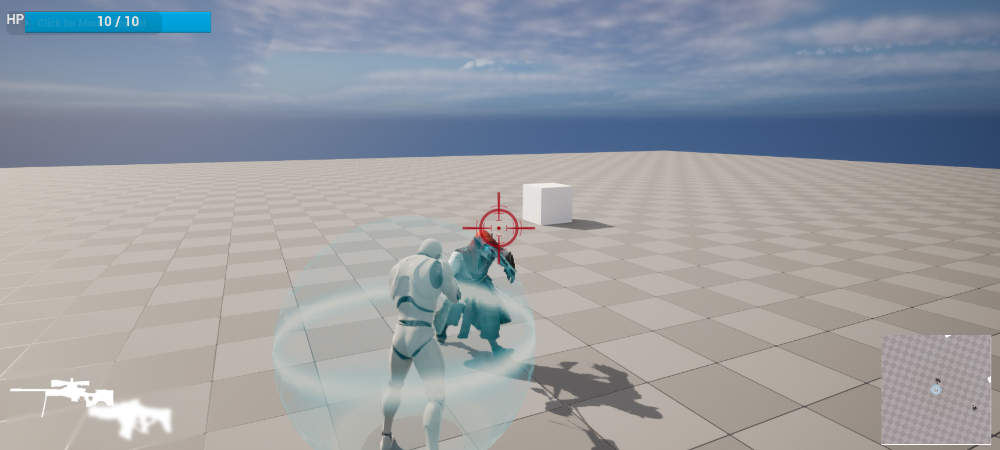
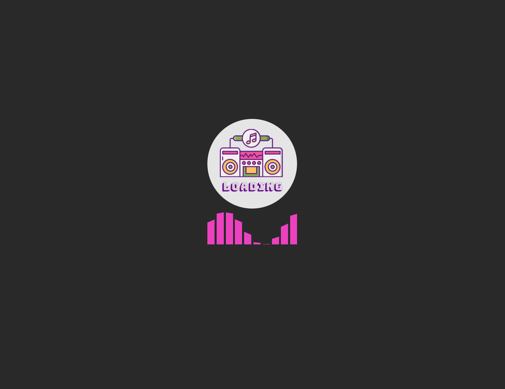
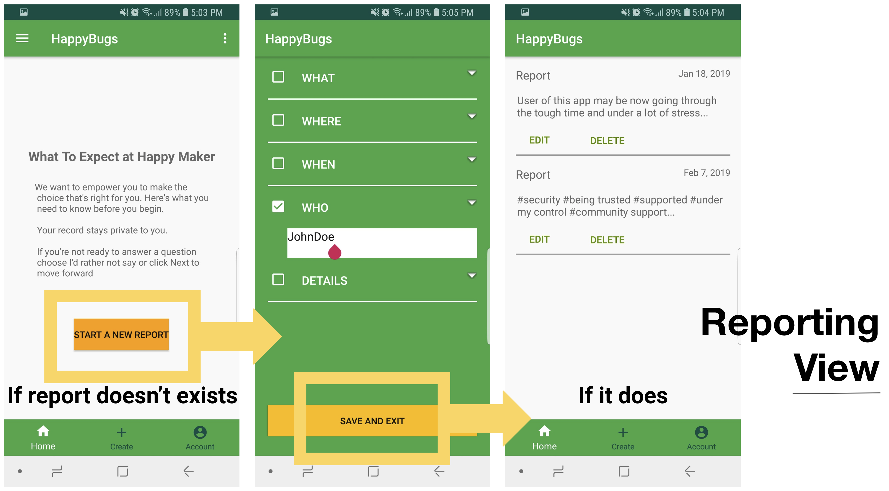

안녕하세요
최성훈의 페이지입니다
인적사항

- Contact
- csh42504@gmail.com
- Education
- 국민대학교 소프트웨어학과 (2018 ~ 2020) (졸업)
- 국민대학교 경영정보학과 (2014 ~ 2017) (전과)
- Tech Skill
- Expert: html, css, javascript
- Intermediate: c++, react
- Basic: Unreal Engine, Flutter
- Career
- Markup Developer 2020.01 ~
Project
- Basic Shooting Game
2023.01 ~ 2023.02
Unreal로 공식다큐멘트와 책을 병행해가며 기초를 익힌 프로젝트입니다.
- Flutter
- FrontEnd
자세히 보기
 StockMemo
StockMemo2022.01 ~ 2022.11
주식에 관련된 주요정보들을 날짜별로 볼 수 있는 어플리케이션입니다.
- Flutter
- FrontEnd
- Team
자세히 보기
 StockGG
StockGG2021.01 ~ 2021.9
주식에 익숙하지 않은 초보자들이 주요정보들을 게임스텟처럼 가볍게 볼 수 있는 웹서비스입니다.
- FrontEnd
- React
- Team
자세히 보기
- ClubRadio
2020.01 ~ 2022.12
자기 주변에 공연이 예정되어 있는 DJ의 곡을 웹스트리밍 해주는 서비스입니다.
- FrontEnd
- React
- Team
- Google Analytics
자세히 보기
Experience
DDoS Research on IoT at University of California, Irvine
2019.06 ~ 2019.12
University of California, Irvine 에서 참여한 연구입니다. IoT의 DDoS 공격에 대한 취약점에 대해 연구하였습니다. IoT 기계들을 공격하기 위한 코딩을 하고, 실제 DDoS 공격을 위하여 다양한 시도를 하였습니다.
2019 Silicon Vally BootCamp
2018.12 ~ 2019.03
미국 실리콘 밸리에서 구글, 페이스북 등 다양한 기업의 현직자들에게 멘토링을 받으며 실제 기업의 프로세스대로 빠르게 제품을 만들어보는 부트캠프였습니다. 프로젝트성을 띄기는 했지만 빠른 템포와 체계적인 작업방식이 기존 프로젝트들과 달랐습니다. 저는 풀스텍 엔지니어로 참여하였습니다. 저희 팀은 성폭행피해자들을 도울 수 있는 어플리케이션에 초점을 맞추고 제작하였습니다.